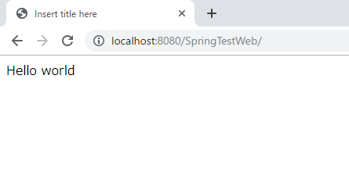
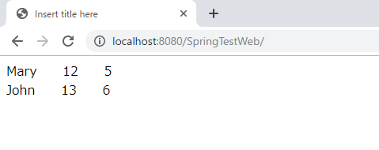
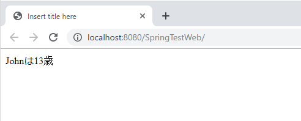
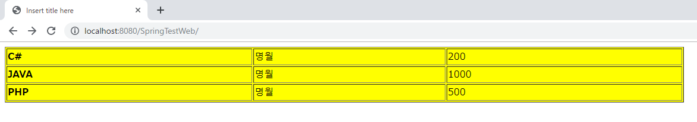

[Java] Web spring frameworkのJSPで使う言語 JSTL - XML
こんにちは。明月です。
このページでは「Web spring framework」の「view」で使う「jstl」 - xmlに関して調べてみました。
前述でコアー、フォーマティング、関数、データベースに関して説明しました。「xml」に関して続けましょう。
link - [Java スタディ - 39] Web spring frameworkのJSPで使う言語 JSTL - 関数、データベース
link - [Java スタディ - 38] Web spring frameworkのJSPで使う言語 JSTL - コアー、フォーマッティング
実は「JSTL」言語でコアー、フォーマティング、関数以外はあまり使わないですね。「xml」ライブラリもそんなに使わないと思います。
データベースライブラリと同じく「xml」データを処理すると思うと「jsp」ページではなく、サーバサイトで処理しますね。または最近は「xml」より「json」タイプをよく使うので以前よりもっと使わないライブラリと言います。
先、「JSTL - xml」の関数を使う前に「pom.xml」でライブラリを一つ追加しなければならないです。(既存のpom.xmlで設定したライブラリを同然にあるんでしょう。)
<!-- https://mvnrepository.com/artifact/xalan/xalan -->
<dependency>
<groupId>xalan</groupId>
<artifactId>xalan</artifactId>
<version>2.4.0</version>
</dependency>
<!-- https://mvnrepository.com/artifact/xerces/xercesImpl -->
<dependency>
<groupId>xerces</groupId>
<artifactId>xercesImpl</artifactId>
<version>2.8.0</version>
</dependency>
XMLライブラリ
c:importでxmlファイルを読み込みます。注意点はウェブ上の「http url」ではなく、サーバサイドの相対パスです。
<?xml version="1.0" encoding="UTF-8"?> <data> <title>Hello world</title> <persons> <student> <name>Mary</name> <age>12</age> <class>5</class> </student> <student> <name>John</name> <age>13</age> <class>6</class> </student> </persons> </data>x:parse, x:out
- x:parseはxmlデータをパーシングします。
- x:outはxpath表現式でデータを出力します。
<c:import var="xmlDoc" url="data.xml"/> <x:parse var="parsedDocument" xml="${xmlDoc}"/> <x:out select="$parsedDocument/data/title" />
x.forEach
- List形でタグ(繰り返されたタグ)の場合、ループらしく、データを持ち来ます。
<c:import var="xmlDoc" url="data.xml"/> <x:parse var="parsedDocument" xml="${xmlDoc}"/> <x:forEach select="$parsedDocument/data/persons/student"> <x:out select="name" /> <x:out select="age" /> <x:out select="class" /> <br /> </x:forEach>
x:sec
- データを変数で置換して格納します。
<c:import var="xmlDoc" url="data.xml"/> <x:parse var="parsedDocument" xml="${xmlDoc}"/> <x:set select="$parsedDocument/data/title" var="title"/> <x:out select="$title" />x:choise x:when x:otherwise
- xmlで「if~else」文です。
<c:import var="xmlDoc" url="data.xml"/> <x:parse var="parsedDocument" xml="${xmlDoc}"/> <x:choose> <x:when select="$parsedDocument/data/persons/student[2]/age = 13"> Johnは13歳 </x:when> <x:when select="$parsedDocument/data/persons/student[2]/age = 12"> Johnは12歳 </x:when> <x:otherwise> Johnの歳は知りません。 </x:otherwise> </x:choose>
x:if
- xmlの「if」文です。
<c:import var="xmlDoc" url="data.xml"/> <x:parse var="parsedDocument" xml="${xmlDoc}"/> <x:if select="$parsedDocument/data/persons/student[2]/age = 13"> Johnは13歳 </x:if>
x:transform, x:param
- 「xlst」ファイルと「xml」ファイルを結合する関数です。
<?xml version="1.0"?> <xsl:stylesheet xmlns:xsl="http://www.w3.org/1999/XSL/Transform" version="1.0"> <xsl:output method="html" indent="yes"/> <xsl:param name="bgColor"/> <xsl:template match="/"> <html> <body> <xsl:apply-templates/> </body> </html> </xsl:template> <xsl:template match="books"> <table border="1" width="60%" bgColor="{$bgColor}"> <xsl:for-each select="book"> <tr> <td> <b><xsl:value-of select="name"/></b> </td> <td> <xsl:value-of select="author"/> </td> <td> <xsl:value-of select="price"/> </td> </tr> </xsl:for-each> </table> </xsl:template> </xsl:stylesheet><c:set var="xmltext"> <books> <book> <name>C#</name> <author>명월</author> <price>200</price> </book> <book> <name>JAVA</name> <author>명월</author> <price>1000</price> </book> <book> <name>PHP</name> <author>명월</author> <price>500</price> </book> </books> </c:set> <c:import var="xslt" url="data.xsl"/> <x:transform xml="${xmltext}" xslt="${xslt}"> <x:param name="bgColor" value="yellow"/> </x:transform>
ここまで「jsp」の「JSTL」言語を纏めました。参照したページは下記でリンクします。
link - https://www.viralpatel.net/parsing-rss-xml-using-jstl-tag-library/
link - https://www.javatpoint.com/jstl-xml-tags
- [Java] Java servletでインスタンスを初期する方法2019/10/17 07:15:48
- [Java] Spring web frameworkで発生する文字化けのEncoding設定2019/10/16 07:32:55
- [Java] Web Spring frameworkでfilter設定2019/10/15 20:12:35
- [Java] Web serviceのweb.xmlでエラーページ設定2019/10/14 20:13:44
- [Java] JPAのDAOをFactoryパターンで管理する方法2019/10/13 22:55:52
- [Java] JPAのSpring frameworkで依存性注入する方法2019/10/13 00:40:08
- [Java] JPAでDAOを生成する方法2019/10/11 07:30:14
- [Java] JPAでトランザクションの使用方法とオブサーバーパターンで共通トランザクション関数を作り方2019/10/10 07:29:43
- [Java] JPAのQuery を作り方2019/10/09 07:34:08
- [Java] JPAのEntityクラス設定(Cascade, fetch)2019/10/08 07:43:33
- [Java] JPAでpersistance.xml設定とentityクラス設定(@GeneratedValue設定)2019/10/07 07:38:13
- [Java] EclipseでJPAフレームワーク設定する方法2019/10/04 19:24:43
- [Java] Web spring frameworkのJSPで使う言語 JSTL - XML2019/10/03 20:02:06
- [Java] Web spring frameworkのJSPで使う言語 JSTL - 関数、データベース2019/10/02 21:00:22
- [Java] Web spring frameworkのJSPで使う言語 JSTL - コアー、フォーマッティング2019/10/01 21:48:08
- [Python] ファイル圧縮、解凍(zipfile)する方法2020/07/14 19:14:22
- [Python] Apache cgiでPythonを使う方法2020/07/09 19:58:19
- [Python] Web serverを起動する方法(http.server)2020/07/09 00:13:13
- [Python] WebSocketを使う方法2020/07/07 17:29:18
- [Python] PythonとJavaのソケット通信する方法2020/07/03 18:35:50
- [Python] PythonとC#のソケット通信2020/07/01 19:28:22
- [Python] INI(環境設定ファイル)を扱う方法2020/06/30 18:26:01
- [Python] Jsonを扱う方法2020/06/29 19:18:15
- [Python] XMLファイルを扱う方法2020/06/26 19:18:14
- [Python] IOを利用してCSVファイルを扱う方法2020/06/25 18:20:30
- [Python] 21. データベース(mariaDB)を連結する方法2020/06/24 18:51:50
- [Python] 20. stringフォマード(Formatting)と補間法(interpolation)2020/06/23 19:03:21
- [Python] 19. 非同期IOのasync/await(asyncio)を使う方法2020/06/22 18:10:12
- [Python] 18. ネットワーク(Socket)通信する方法2020/06/18 19:53:56
- [Python] 17. スレッド(Thread)とロック(lock)、そしてデッドロック(deadlock)2020/06/18 00:19:45